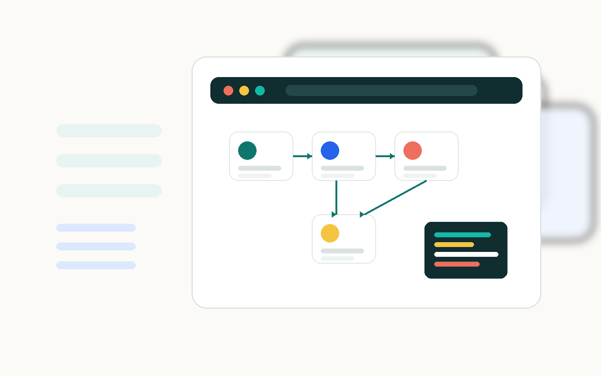

Claude + Claude Code
Claude - чат с ИИ. - инструмент Claude для работы с кодом: он читает файлы, пишет код и помогает собирать проект.
Официальный сайт ClaudeПодготовка перед тренингом
Пройдите подготовительные шаги: аккаунт Claude или ChatGPT, , установка , , и или . После этого можно спокойно начинать практику.

Общий план
Это не урок по созданию проекта. Это чеклист подготовки, чтобы на тренинге не тратить время на доступы и настройки.
Создать аккаунт в одном из сервисов.
Claude Pro или ChatGPT Plus: примерно $20/месяц.
Отдельная инструкция для Windows и macOS.
Скачать и установить приложение.
Создать аккаунт и подтвердить почту.
Создать и сохранить ключ доступа.
Подключить GitHub к выбранному приложению.
Выбор пути
Выберите один вариант. После выбора инструкция подстроится под нужный инструмент: для Claude или для ChatGPT.
Claude - чат с ИИ. - инструмент Claude для работы с кодом: он читает файлы, пишет код и помогает собирать проект.
Официальный сайт ClaudeChatGPT - чат с ИИ. - инструмент OpenAI/ChatGPT для работы с кодом: помогает писать, менять и проверять проект.
Официальный сайт ChatGPTПошаговый гайд
Шаг 1
Для тренинга нужен один основной ИИ-сервис. Лучше авторизоваться через : так проще входить на разных устройствах и меньше риск забыть пароль.
Шаг 2
обязательна для нормальной работы на тренинге. Claude Pro стоит около $20 в месяц. Цена может отличаться по региону и налогам.
Шаг 3
Дальше инструкция будет отличаться для и .
Шаг 4
помогает приложению сохранять изменения и отправлять проект в GitHub.
Git-2.55.0-64-bit.exe.Next / Далее.Install, затем Finish.Cmd + Space, напишите Terminal и нажмите Enter./bin/bash -c "$(curl -fsSL https://raw.githubusercontent.com/Homebrew/install/HEAD/install.sh)"brew install gitШаг 5
Скачайте приложение для выбранной системы: Windows.
Шаг 6
нужен, чтобы хранить код и публиковать сайт через .
Шаг 7
позволит приложению создать и отправить туда файлы.
Note напишите любое понятное название.Expiration выберите No expiration.repo.Generate token.Шаг 8
На следующем этапе мы подробно распишем, куда вставить token и как проверить подключение к GitHub.
Подробная пошаговая инструкция будет добавлена позже.